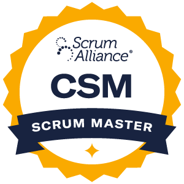
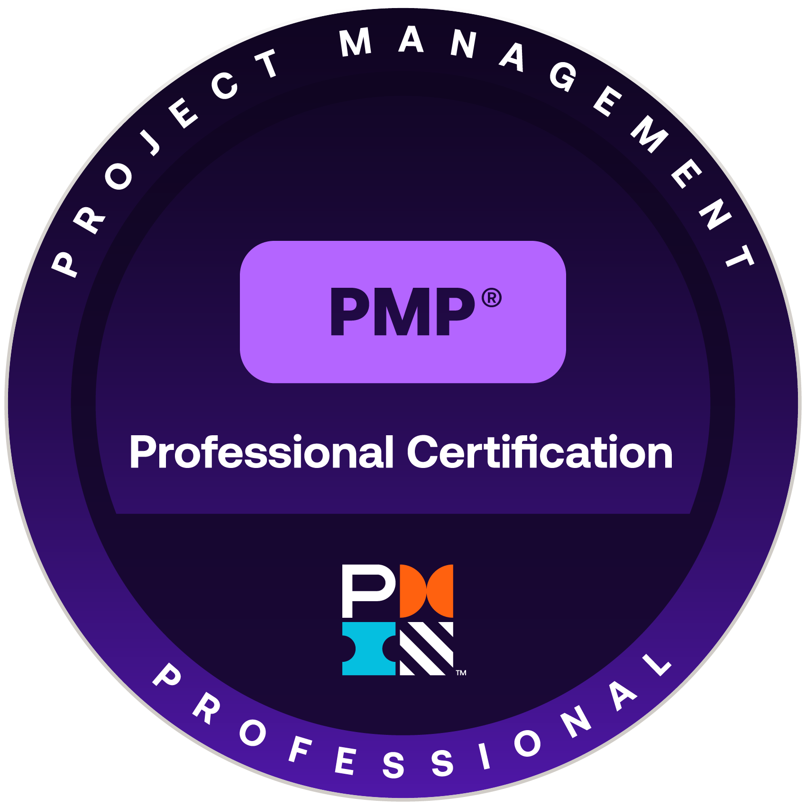

Benjamin Madera Jr
Senior Military Officer | Program Management | Leadership Expert
Senior Military Officer | Program Management | Leadership Expert
A retired senior military officer skilled at leveraging cross-cultural strengths and possessing a robust foundation in captivating program management and leadership opportunities. Driven by adaptive learning and proficiently leading experts to achieve project triumphs through agile analytical techniques, project management, analytics, strategic planning, relationship- building, and aligning operations with goals. Strong oral and written communication skills. Excel in managing budgets, equipment, and assets while mitigating risk and ensuring safety to obtain achievements in line with corporate objectives.

As of 2022


As of 2024
HSC, 7th ID | U.S. Army | JBLM, WA
HSC, 7th ID | U.S. Army | JBLM, WA
2-357 IN BN | U.S. Army | JBLM, WA
A Co., 1-17th AVN | U.S. Army | Fort Rucker, AL
HHT, 2-17 CAV | U.S. Army | Fort Campbell, KY
Technology Management MBA Degree Plan
UW, WA
Aviation Maintenance Officer Course
Fort Rucker, AL
in Military Decision-Making Process Aviation Captain Career Course
Fort Rucker, AL

Army Aviation Rotary Flight School
Fort Rucker, AL
Campbell University
Buies Creek, NC
Recipient Summa Cum Laude